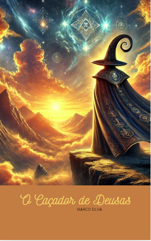

Romance / Fantasia Poética
O Caçador de Deusas
"Para salvar quem amamos no Céu, primeiro temos de aprender a mudar nós mesmos aqui na Terra."
Quando o poeta Joaquim desperta no Paraíso após a sua morte, descobre que a promessa de harmonia eterna esconde um controlo rigoroso e uma guerra silenciosa entre os Deuses e aqueles que ousam pensar por si próprios.
Recusando ser mais um peão num tabuleiro divino, Joaquim transforma a sua dor em poesia, usando a palavra como única arma para desafiar a omnipotência de Xin-Xao e as ilusões que governam o Céu.